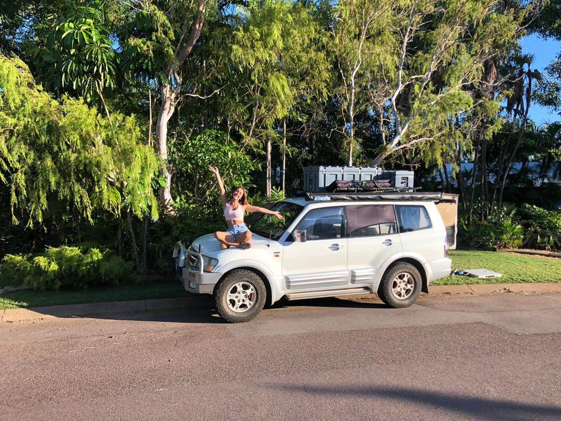

At any one time, Mitsubishi Wreckers Perth typically carry 500-plus vehicles in stock for dismantling, as well as an extensive selection of recycled Mitsubishi spare parts. Our experienced staff have excellent knowledge of both what is immediately available from our current stock and where to source Mitsubishi parts that are not obtainable in Perth.
Our team of knowledgeable and experienced car buyers are always ready to help. So if you’re looking for expert advice on your Mitsubishi vehicle, make sure to check out the best selling Mitsubishi services in Perth or call us for free, no obligation advice anytime. It takes skilled and experienced staff to keep Mitsubishi vehicles well looked after You wouldn’t expect to get the best value from a used vehicle if it had to deal with problems that we couldn’t quickly fix, and this is why Mitsubishi Wreckers Perth have been in business for more than 35 years. We have a very solid reputation for customer satisfaction, and we also try to ensure that every vehicle that comes into our workshop has no issues or faults before they leave.

We also have a large range of Mitsubishi parts available for dismantling. Mitsubishi owners will appreciate that we do not buy anything used, we only buy new products. New Mitsubishi models can be expensive, so we also have a large range of Mitsubishi parts to cover any budget. From damage parts for your current vehicle, to parts and accessories for that dream replacement car, we have a wide range of quality, correct replacement parts on display for easy reference. Contact us Mitsubishi Wreckers Perth is a family-run business with over 30 years of automotive recycling experience. We are committed to the best services and products possible for our customers. Our experienced team of staff have a wealth of knowledge and years of experience in automotive dismantling and processing.
Other than one or two wheel bearings, most parts can be sourced from either Japanese or overseas sources. Please see our parts pages for details. Often we find very good quality used engines to be available for scrapping. Where can I dispose of the old tyre in my car? Lacking a wheel, tyre manufacturers recommend the old tyres be placed in a plastic tyre liner. Make sure it is packed tightly around the tyre. Often, the roof of your car will also need to be removed. However, if it is relatively simple to be removed, we may leave this off for aesthetic reasons.
Recycling options for vehicle parts can be found online at the Australian Federal Government’s NRMA website. This includes options for disposal and recycling of three different types of Mitsubishi parts – engine, transmission and clutch. To find more information about how to recycle your old Mitsubishi vehicle, visit www.nrma.gov.au. When should you dispose of your old Mitsubishi vehicle? If you no longer own your vehicle, you may wish to use the disposal or recycling option for it. Most recycling centres are open daily, including long weekends. Once you have found a recycling facility, ensure they accept your vehicle, and have available space to store it. One of the major concerns about recycling your vehicle is its safety for the environment and for workers.
Address:103 Sheffield Rd, Welshpool WA 6106
Phone: (08) 9358 1392